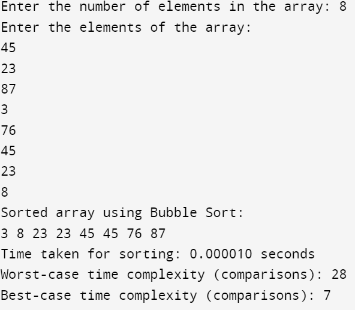

#include <stdio.h>
#include <time.h>
void swap(int *a, int *b) {
int temp = *a;
*a = *b;
*b = temp;
}
void bubbleSort(int arr[], int n) {
if (n <= 1) {
return;
}
for (int i = 0; i < n - 1; i++) {
if (arr[i] > arr[i + 1]) {
swap(&arr[i], &arr[i + 1]);
}
}
bubbleSort(arr, n - 1);
}
int main() {
int n;
printf("Enter the number of elements in the array: ");
scanf("%d", &n);
int arr[n];
printf("Enter the elements of the array:\n");
for (int i = 0; i < n; i++) {
scanf("%d", &arr[i]);
}
clock_t start_time, end_time;
start_time = clock();
bubbleSort(arr, n);
end_time = clock();
printf("Sorted array using Bubble Sort:\n");
for (int i = 0; i < n; i++)
{
printf("%d ", arr[i]);
}
double execution_time = (double)(end_time - start_time) / CLOCKS_PER_SEC;
printf("\nTime taken for sorting: %f seconds\n", execution_time);
int worst_case_comparisons = (n * (n - 1)) / 2;
printf("Worst-case time complexity (comparisons): %d\n", worst_case_comparisons);
int best_case_comparisons = n - 1;
printf("Best-case time complexity (comparisons): %d\n", best_case_comparisons);
return 0;
}
Output:
